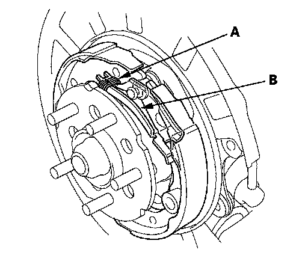

Removal and Replacement
Parking Brake Shoe ReplacementCAUTION: Frequent inhalation of brake pad dust, regardless of material composition, could be hazardous to your health.
^ Avoid breathing dust particles.
^ Never use an air hose or brush to clean brake assemblies. Use an OSHA-approved vacuum cleaner.
Disassembly
1. Raise the rear of the vehicle, and support it with safety stands in the proper locations.
2. Remove the rear wheels.
3. Release the parking brake, and remove the following items:
^ Rear brake caliper bracket.
^ Rear brake disc/drum.
4. Disconnect and remove the upper return springs (A).
5. Remove the tension pins (A) by pushing the respective retainer (B) and turning the pin.
6. Remove the strut (A).
7. Lower the parking brake shoe assembly.
8. Remove the forward brake shoe (A) and the adjuster assembly (B) by removing the lower return spring (C).
9. Remove the rearward brake shoe by disconnecting the parking brake cable (A) from the parking brake lever (B).
10. Remove the U-clip (A), wave washer (B), and parking brake lever (C) from the brake shoe (D).
Reassembly
1. Apply Molykote Plastilube # 2 grease to the sliding surface of the pivot pin (A) of the rearward brake shoe (B).
2. Install the parking brake lever (C) and wave washer (D) on the pivot pin, and secure with a new U-clip
^ Install the wave washer with its convex side facing out.
^ Pinch the U-clip securely to prevent the parking brake lever from coming off the brake shoe.
3. Connect the parking brake cable (A) to the parking brake lever (B). Apply Plastilube # 2 grease to the cable contact surface (C) on the backing plate.
4. Apply a thin coat of Plastilube # 2 grease to the shoe ends and strut ends (A), sliding surfaces (B), and opposite edges of the parking brake shoe (C) as shown. Wipe off any excess. Keep the grease off the brake linings.

5. Install the tension pin (A), the retainer spring (B), and the retainer (C) on the rearward brake shoe (D). Make sure the tension pin does not contact the parking brake lever.
6. Install connecting rods A and B on the adjuster nut (C).
NOTE:
^ Clean the threaded portions of connecting rod A and the sliding surface of connecting rod B, then coat them with rubber grease.
^ Shorten connecting rod A by fully turning the adjuster nut.
7. Position the brake shoe adjuster assembly (D) on the parking brake shoes.
8. Hook the lower return spring on the parking brake shoes.
9. Install the rod spring (A) to the strut (B) first. Then install the strut on the parking brake shoes.

10. Install the tension pin (A), the retainer spring (B), and the retainer (C) on the forward brake shoe (D).
11. Install the forward upper return spring (A) as shown.
12. Install the rearward upper return spring (B) as shown.
13. Install the rear brake disc/drum and the rear brake caliper bracket in the reverse order of removal.
14. Do the major parking brake adjustment.